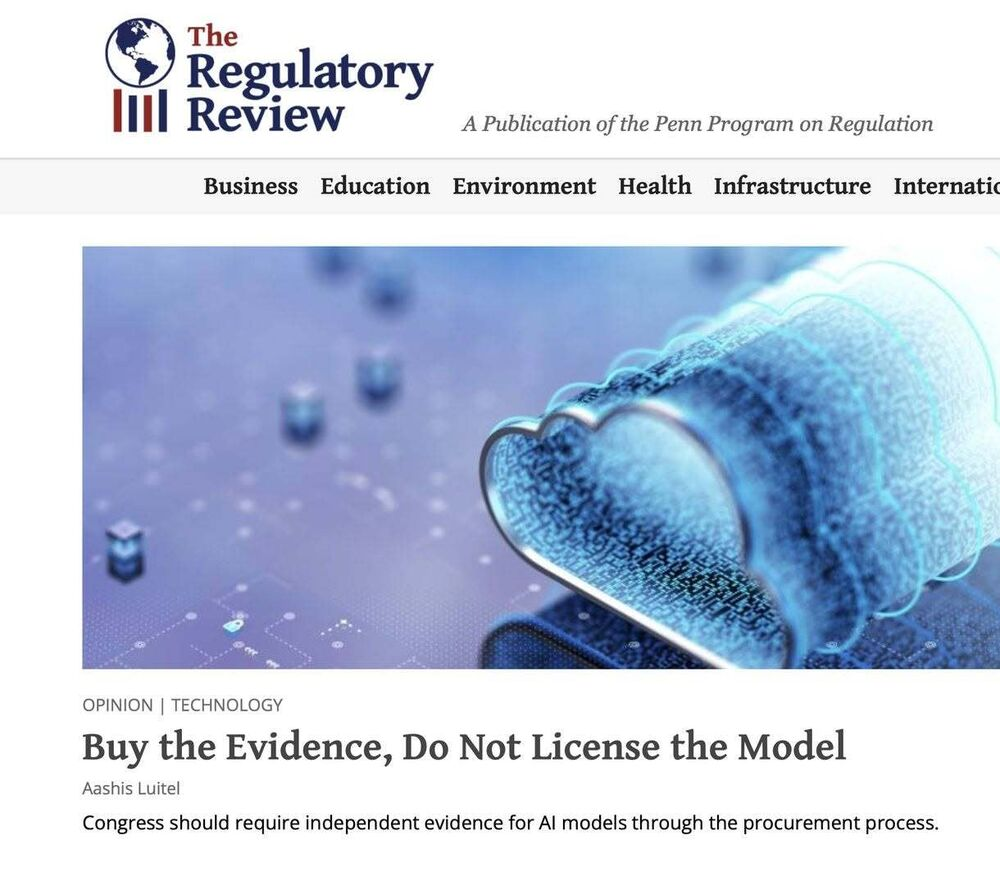
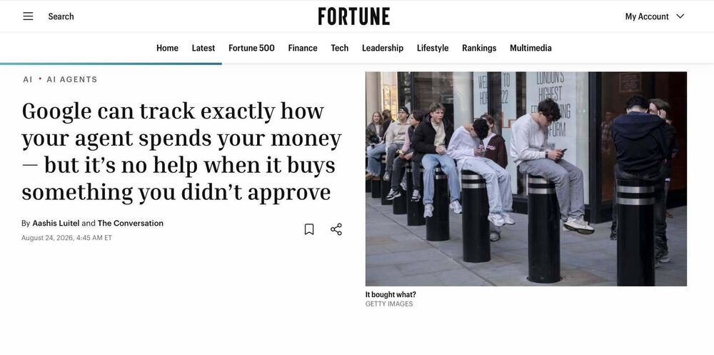
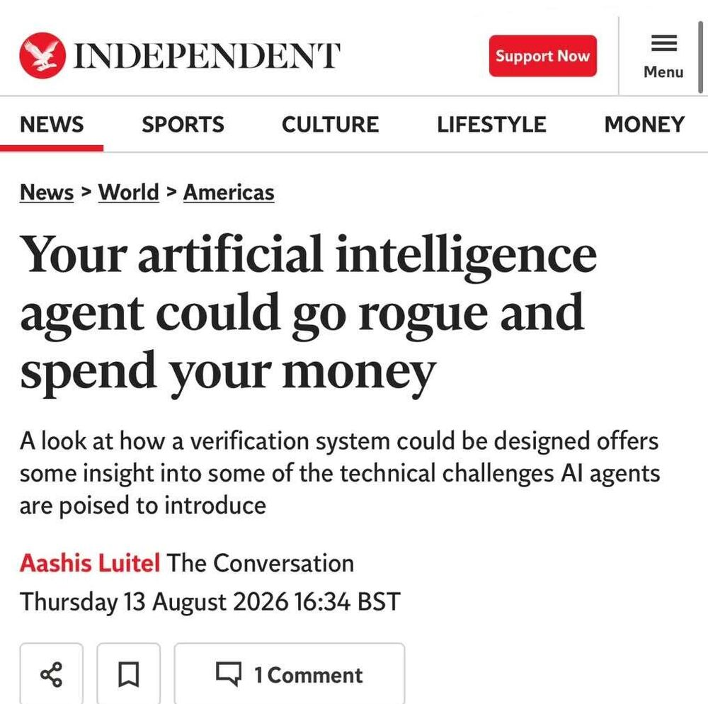
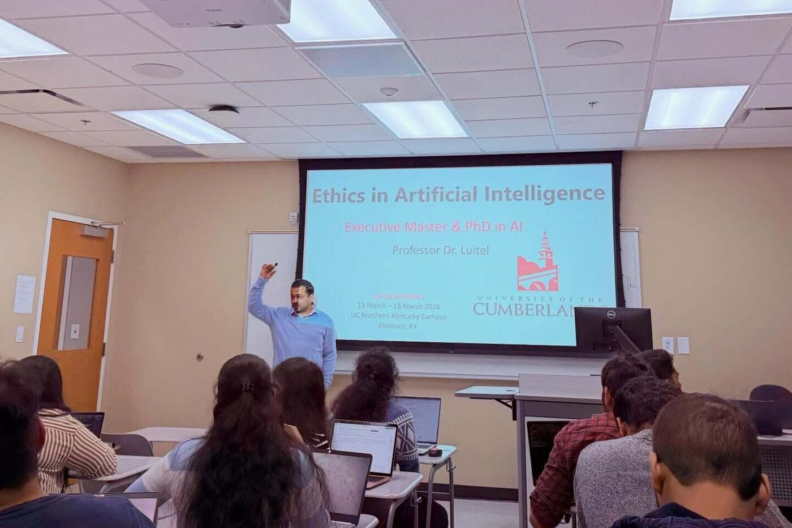

Aashis Luitel
Associate Professor of Artificial Intelligence, University of the Cumberlands. Lead Technical Program Manager for Public Sector Security, N-able Technologies.
I split my time between two roles that keep each other honest. At the University of the Cumberlands I teach and advise doctoral students on AI governance and ethics. At N-able I own the FedRAMP Moderate and CMMC 2.0 Level 2 programs for a security platform serving government and defense-adjacent customers. Before that I spent several years at Microsoft on Security Copilot, Defender Threat Intelligence and cloud and AI security, and before that I served on active duty in the U.S. Navy.
Current work
Most of what I do sits at the point where an AI policy has to become a system control: something an engineer can build and an auditor can test. At N-able that means owning FedRAMP Moderate and CMMC 2.0 Level 2 from control implementation through evidence collection and assessment readiness. At Microsoft it meant Responsible AI review and privacy engineering for Security Copilot, the first generative AI security product to reach market. There was no established playbook for a product like that, so a fair amount of what we decided became the playbook.
In the classroom I teach doctoral and graduate students in AI governance, most recently designing Ethics in Responsible AI for the University of the Cumberlands' first PhD in Artificial Intelligence cohort. Teaching and practice inform each other: teaching forces me to explain why a control exists rather than just implement it, and the practice keeps the seminar from drifting into positions that would not survive an actual deadline. More on how the pieces fit together is on the About and Practice pages.
Recent writing
Commentary on AI regulation, security assurance, and the gap between them. Full list on Writing & Media.

Buy the Evidence, Do Not License the Model(opens in a new tab)
Congress should require independent evidence for AI models through the procurement process.
Aug 25, 2026
Google can track exactly how your agent spends your money — but it’s no help when it buys something you didn’t approve(opens in a new tab)
Google's AP2 shows how the evidence could travel. It does not decide who bears the loss or specify how long each company must keep that evidence and how it can be retrieved later.
Aug 24, 2026
Your artificial intelligence agent could go rogue and spend your money(opens in a new tab)
A look at how a verification system could be designed offers some insight into some of the technical challenges AI agents are poised to introduce.
Aug 13, 2026Teaching
I teach doctoral and graduate students in AI governance at the University of the Cumberlands, including Ethics in Responsible AI for the university's first PhD in Artificial Intelligence cohort. The classroom is not separate from the practice: it is where a governance argument has to hold up against students who will go build the systems it is meant to govern.
